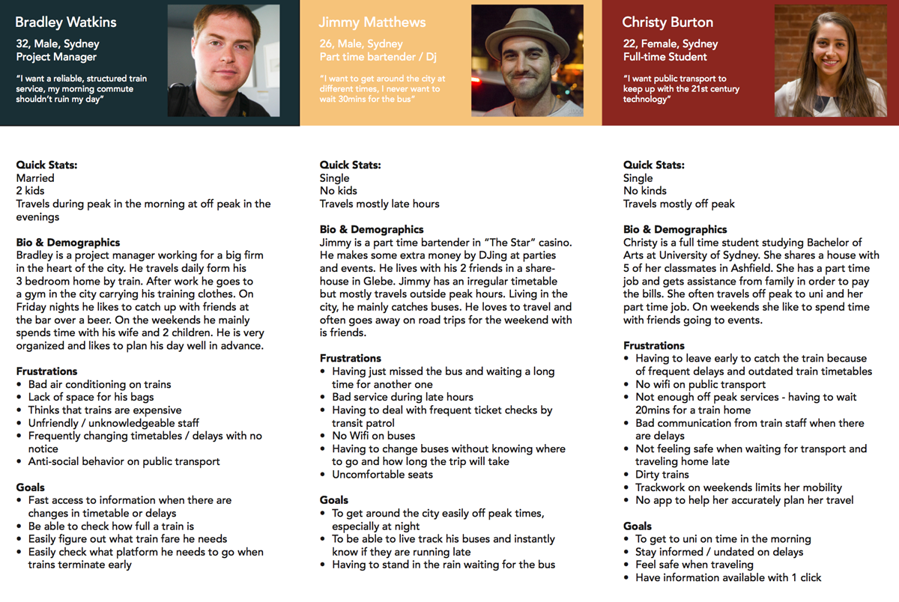
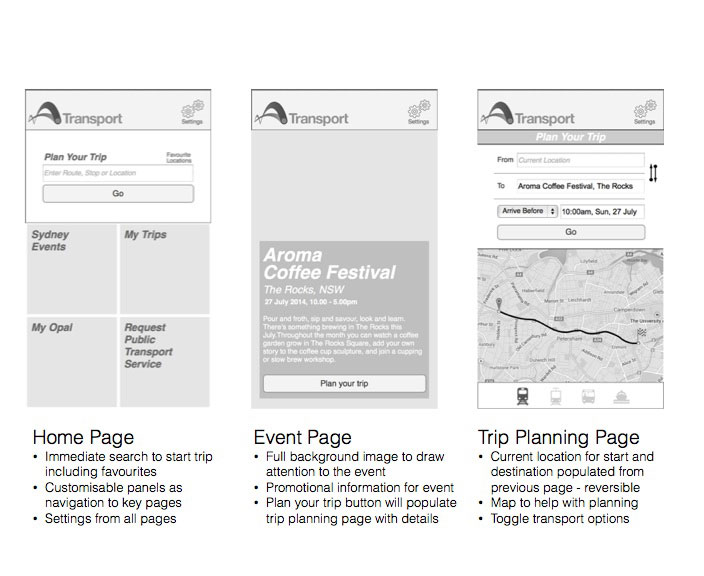

Transport NSW
Mobile App
Client
City of Sydney & Transport NSW
Duration
- 2 weeks
Team
- Daniela Rytova
- Kevin Chan
- Manny Dickson
Brief
The client was looking for a digital means to to make traveling a more easy and convenient customer experience.
My Role
- Generalist
- Heuristic Analysis
- Contextual Inquiry
- Personas
- User Testing Interviews
- Scenarios
- Creating Axure Prototypes
- Putting together presentation
Tools
- OmniGraffle
- Axure
- KeyNote
- Adobe Photoshop
- Visual Mockup
- Excel, Word
- Data Sorting
- Competitor Analysis
- Camera
The Project
The client (Transport NSW & City of Sydney) was looking for a digital means to to make traveling a more easy and convenient customer experience. The aim was to increase ridership of public transportation, specifically during off-peak times, in order to decrease traffic congestion on roads and to improve access to the CBD.
Features
- Request a service
- Service Announcements
- Live Tracking
- Scheduling/Reminders
- City of Sydney Promo
- Trip Calculator
- My Opal
Kick off meeting
We started by discussing the team dynamic, our strengths and how we were going to work together. I quickly discovered we had a team with a strong visual design background, software skill and presentation skills. I kept this information in mind when assigning tasks for the project.
30th June 2014Heuristic Analysis
I started by conducting a heuristic analysis on the existing web-page. I quickly found a few minor problems and one or two major usability issues. However, the issue of ridership lay was deeper than the usability of the website.
 30th June 2014
30th June 2014
Feature Analysis
We then looked at the wider market of third party apps available. We created a list of features provided by these apps and created a chart so we could see if there was crossover and which features were most in demand.

 30th June 2014
30th June 2014
Third Party Research
Public Transport being a major topic of debate, we discovered a lot of third party information online that contributed to our findings. These included, previously conducted survey results, statistics and transport NSW usage reports.
 Jan 14
Jan 14
Contextual Inquiry
We decided to dig deeper and each of us selected a mode of transport (bus, train, ferry) to observe users in their natural environment. We took some photos and had a de-brief. The users we all different ages, different cultures, had different jobs but were all doing the same things. Looking down at their devices, listening to music on their devices or reading on their devices.
Jan 14Survey
We distributed a survey focusing on people's perceptions and pain points when it came to public transport. We looked at safety, usability of the service, usefulness and left a section for comments/suggestions. We were quickly overwhelmed with responses, this is something people were passionate about. In the end we totaled 105 responses with the key takeaways being that people were frustrated with the delays, found the staff to be uninformed/unfriendly and believed they weren't getting value for money.
 Jan 14
Jan 14
Brainstorming
We held a brainstorming session to generate as many ideas as we could to solve this problem. We knew the solution had to be digital so we focused on how we could change the perception of our users and aid them with their concerns. We were left with a list of 14 features we could implement. We now needed to prioritize which features the users needed most and which ones were out of scope or out of our control
Jan 14Feature Prioritization
We created a diagram with 2 axes one spanning from least effort/expense to most effort/expense and another spanning from "nice to have" to essential. We pinned our ideas onto the board using the research data we had gathered. We realized that some essential features already existed but they were scattered across different apps. Others we needed to implement from scratch
 Jan 14
Jan 14
Lets Go Mobile!
Based on the information gathered so far we decided that a mobile app was the best way to reach our users on the go. Transport NSW currently doesn't have an app and we needed a medium that was personal, portable, connected and contextual.
 Jan 14
Jan 14
Personas and User Flows
We then moved into creating personas and scenarios based on our previous research. We tried to picture a scenario of how a person would wake up in the morning, how they find out information about delays or simply how they would plan a trip with their family on the weekend. We focused on off-peak users in order to target the increase of ridership
 Jan 14Sitemap
We needed to figure out how these features would work together and create a logical hierarchy. We each created our own site-maps and then discussed which would work better.
 Jan 14
Jan 14
Design Studio
We each took several hours to create sketches on how we think the interface should look and function. Which screen would follow after the next and which prompts were required on each page. We came up with several very different ideas.
Jan 14Sketches to wireframes
We tested at every stage of the development process, starting from paper sketches all the way to fully fledged wireframes. This allowed us to modify what we had quickly and efficiently. We had made several changes to the landing screens and detail pages throughout this process
 Jan 14Prototype
We created a clickable prototype using Axure and tested it on users. After making a few modifications based on user feedback we were left with this.
 Jan 14
Jan 14
Testing Results
We received some preliminary positive feedback from testing. We found that all users were able to plan their trip easily, they found it easy to plan an event, they had no difficulty planning their trip around an event, the layout of the interface was said to be easy to use and the map feature was familiar and simple.
 Jan 14
Jan 14
Next Steps
To conclude our project we gave recommendation for the client to conduct further testing,
 Jan 14
Jan 14